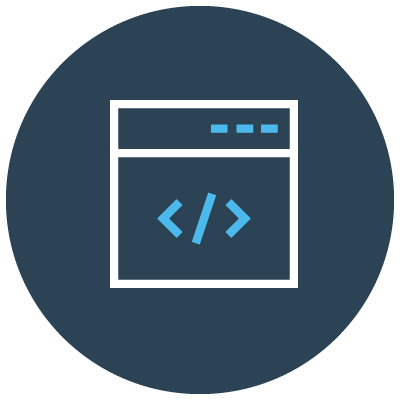

How to Start
To start with programming, first you need to choose a language that is most suitable with your goals. There are so many programming languages around the world but mostly people start with easier and more popular languages. Then you need to install the required software in order to write and run applications in that language.


I will give information about programming languages, what are the applications of each language and which are most suitable for beginners. After choosing your language and installing software you are ready to write code however, you will have to practice the subjects that we cover in order not to forget them and understand them perfectly.
Also, once you learn the concept and the logic of programming, you will be able to learn any programming language much easier. For example, I learned many of subjects in Java, after reading some documentations about Python, I was able to create similar applications in Python. Therefore, you can first learn the logic of programming with a basic language then you can switch to a language which’s applications are more interesting to you.